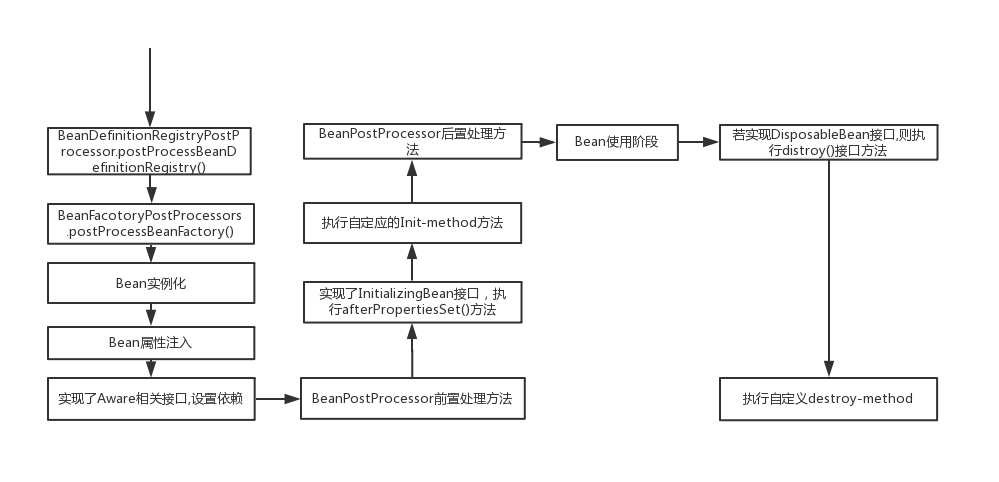

回顾Bean与BeanDefinition的关系. BeanFactory容器. ApplicationContext上下文.
首先总结下:
[开发人员]--标注-->[Bean定义] ---搜集 -->[BeanDefinition]---创建-->[Bean]
此节:我们从代码层面分析此过程.
refresh()方法描述了ApplicationContext的初始化过程，这个过程大部分工作都是执行Bean定义到BeanDefinition到Bean的过程。
refresh()大致可以分为五部分来看：
1.BeanDefinition入库前准备阶段：
总的的来说，此阶段是在做beanFactory的相关配置。
2.BeanDefinition搜集入库阶段：
此过程非常的精妙。由PostProcessorRegistrationDelegate.invokeBeanFactoryPostProcessors()全全负责，
PostProcessorRegistrationDelegate.invokeBeanFactoryPostProcessors()方法上本质就干了两件事：
3.部分特殊功能的Bean提前创建：
此阶段把少部分特殊用处的BeanDefinition先创建Bean供使用。
4.普通BeanDefinition生成Bean阶段
此阶段是大部分BeanDefinition生成Bean的阶段。
finishBeanFactoryInitialization(beanFactory);：
此过程，就是上篇文章说的 ，applicationContext上下文触发beanFactory内部的BeanDefinition创建Bean。
我们想象一个场景: 先往一个机器内先放入原料BeanDefinition后,然后再按下开关开始制造.ApplicationContext在此处就好比按下开关.开始Bean的制造,Bean的制作过程是一条流水线,流水线上有不同类型的机器对原料做不同的处理,最终得到Bean
ApplicationContext调用DefaultListableBeanFactory.preInstantiateSingletons()开始触发Bean的创建:
doGetBean:
doGetBean->createBean：
doGetBean->createBean->代理对象: 返回代理对象
doGetBean->createBean->doCreateBean：没有创建自定义代理对象继续执行
doGetBean->createBean->doCreateBean->initializeBean 实例化Bean
5.applicationContext的收尾阶段
finishRefresh();
收尾阶段其实也算是applicationContext的扩展点。Lifecycle接口生命周期接口，
（1.首先会从Bean容器中获取LifecycleProcessor类型的Bean，如果没有则创建一个默认的DefaultLifecycleProcessor。LifecycleProcessor是干嘛用的？LifecycleProcessor是用来处理Lifecycle接口的bean的。
（2.使用获得LifecycleProcessor执行实现了Lifecycle接口的Bean的start(）方法
（3.发布上下文初始化完成事件
（4.Participate in LiveBeansView MBean, if active.不是很清楚干嘛的。
看完了refresh()方法。我们再来总结下Bean的生命周期。
用一张图表示

Bean的完整生命周期分为四个阶段：
第一阶段：实例化阶段。
从Bean定义的收集到BeanDefinition的入库顺序执行
BeanDefinitionRegistryPostProcessor注册处理器，注册一些BeanDefinition
BeanFactoryPostProcessor，对入库的BeanDefinition进行定义的修改。
BeanWrapper的产生，BeanWrapper是Bean的早期产品。
populateBean()执行属性的设置
总结：此阶段是BeanDefinition->BeanWrapper ，各种属性的设置
第二阶段：初始化阶段：主要是执行各种初始化方法
invokeAwareMethods(beanName, bean);执行Aware属性的相关设置。
BeanPostProcessor.postProcessBeforeInitialization前置方法的执行，
如果实现了InitializingBean.afterPropertiesSet()则执行此方法
执行自定义的initMethod方法。
BeanPostProcessor.postProcessBeforeInitialization后置方法的执行，
第三阶段：使用阶段
getBean从容器的缓存中取出Bean
第四阶段：销毁阶段
执行DisposableBean.distroy方法
执行自定义detry-method
整个spring初始化过程可以看做是
欢迎大家关注我的公众号【源码行动】，最新个人理解及时奉送。